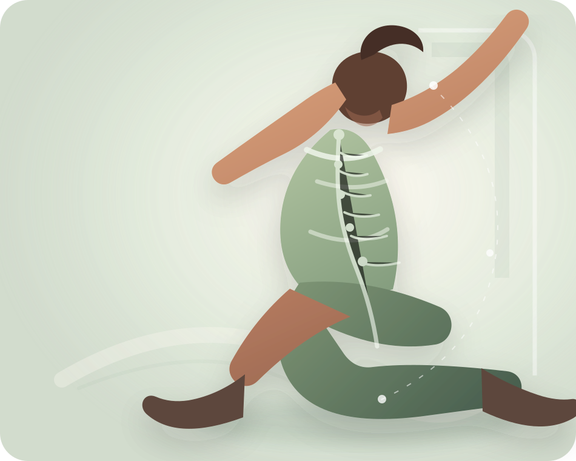

Профилактика · диагностика · движение
Лаборатория профилактики и качества движения
От анализа и диагностики к профилактике. От движения к гармонии.
Гибридная клиника, объединяющая онлайн и офлайн экспертизу, передовые методы диагностики и персонализированные решения для вашего здоровья и качества жизни.

Анализ
и диагностика
и диагностика
Движение
и восстановление
и восстановление
Профилактика
и гармония
и гармония
Наши базисные направления
Ортопедические решения и продукты
Индивидуальные ортопедические стельки, корректирующие изделия и современные решения для поддержки и восстановления движения.
Физическая медицина и курсы упражнений
Реабилитация, лечебная физкультура и персональные программы упражнений для восстановления функции и улучшения качества движения.
Спортивное направление
Сопровождение спортсменов и активных людей: профилактика травм, повышение результатов, возврат к активной жизни.
Превентивная и профилактическая медицина
Ранняя диагностика, оценка рисков и персональные программы профилактики для сохранения здоровья на долгие годы.
Раздел доказательной нутрициологии
Научно обоснованные рекомендации по питанию и нутрицевтикам для поддержки здоровья и восстановления.
Советы по образу жизни, направленные на повышение качества жизни пациента
Всё о сне, стрессе, привычках и ежедневных практиках для гармоничной и активной жизни.
Экспертиза и опыт
Команда врачей и специалистов с доказательной экспертизой.
Современная диагностика
Передовые методы анализа для точной оценки и эффективного планирования.
Персонализированные решения
Индивидуальные программы, основанные на целях, потребностях и особенностях.
Непрерывное сопровождение
Поддержка на каждом этапе вашего пути к здоровью и гармонии.
Движение — это жизнь.
Качество движения — это качество жизни.
о клинике